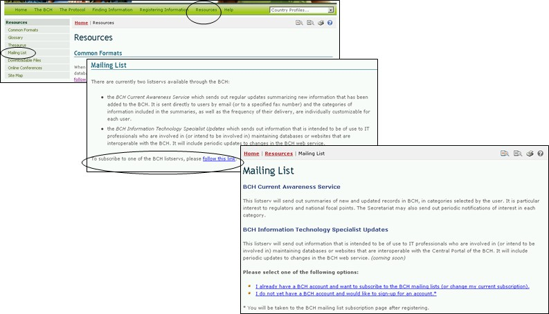

通过群发邮件清单可进入生物安全信息交换所中央门户网站提供的群邮清单程序。群邮清单程序是已订阅定期接受有关某一专题信息的用户的电子邮件地址清单。
生物安全信息交换所了解最新状况服务定期向用户发送添加到生物安全信息交换所上的最新信息概要。该项服务直接通过电子邮件发送给用户，但也可以通过传真接受更新（请与秘书处联系提供您的传真号码用于接受该项服务）。
在最新状况概要中包含的信息类型以及发送信息的频率可根据各用户的需求定制。
生物安全信息交换所信息技术专家最新动态主要发送给参与维护与生物安全信息交换所可互操作的数据库或网址的IT专业人士。通报的内容包括生物安全信息交换所网址上的最新变化

图 50
群邮清单 页也提供链接，可以订阅现有的服务或对用户已订阅的服务进行管理 /更新。
第一个链接将用户带入 登录管理中心 页面。登录进入管理中心后，用户可订阅群邮功能。
第二个链接打开登录 生物安全信息交换所 账户 页面。用户根据其与生物安全信息交换所的附属关系（如生物安全信息交换所国家联络点、能力建设机构、生物安全专家等）登记。
有关如何使用管理中心的详细指南见模块MO06A。

图 51